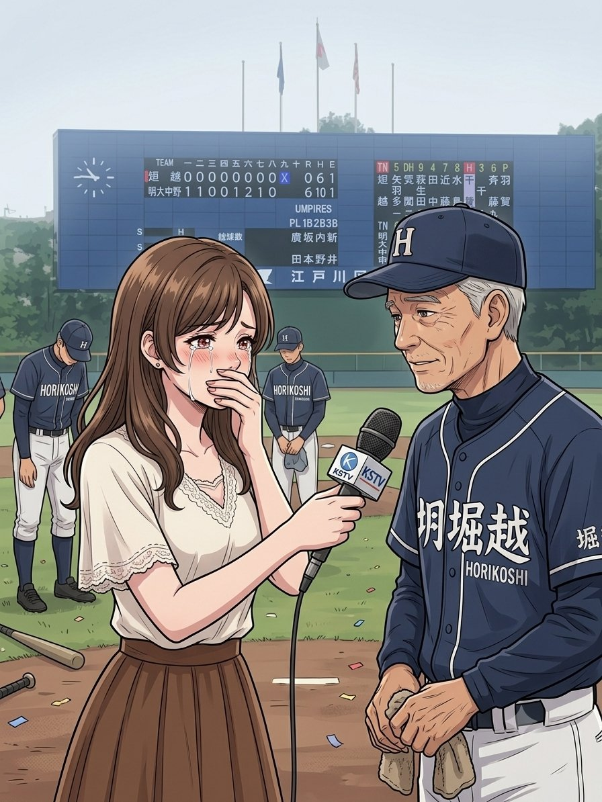

SAKURA Tv ANNOUNCER PORTFOLIO
サクラTV アナウンサー ゆい

「取材中、思わず感極まって涙が...！いつも全力投球です！」
Profile
名前
ゆい (Yui)
年齢
24歳
所属局
サクラTv
担当・班
ジャイアンツ取材班
出身地
広島県呉市
現住所
東京都音楽市
(音楽の調べが響く街)
Episode & Debut
バラエティ番組全般で大活躍中！
伝説のデビュー秘話：
バラエティ番組の罰ゲーム企画で、スリル満点のジェットコースターに搭乗！ 風圧と衝撃のあまり「パンチラ」ハプニングが発生してしまいましたが、その全力で飾らない姿がお茶の間の心を掴み、一躍人気者の階段を駆け上がりました。
Close Friend
親友紹介
ミカちゃん (Mika)
大学時代からの大の仲良し。現在はオシャレなカフェで働いています。
普段はちょっと（？）、いや、かなりのドジっ子なゆいちゃん。そんなゆいちゃんの失敗や天然発言を、いつもお姉さんのように優しく、そして可愛らしくフォローしてくれるかけがえのない存在です。二人がカフェでお喋りする時間が、ゆいちゃんの一番の癒やしです。